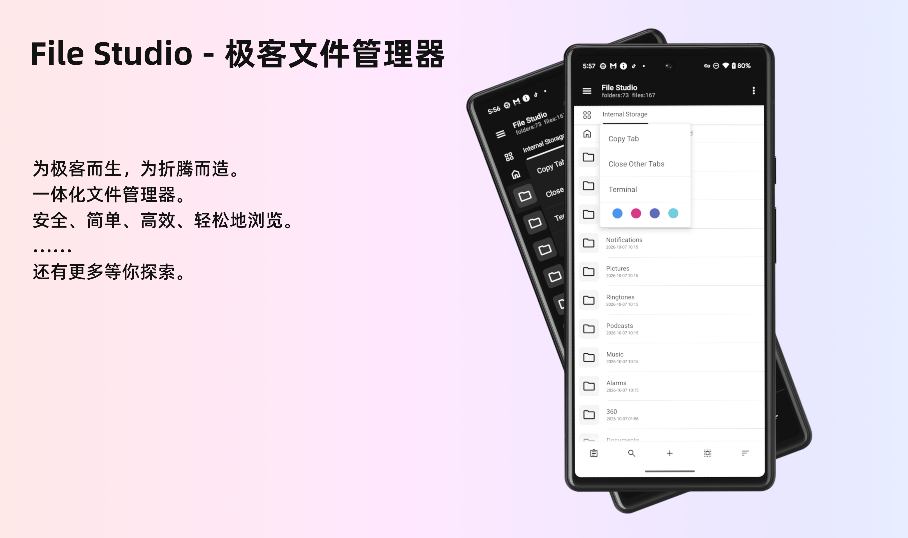
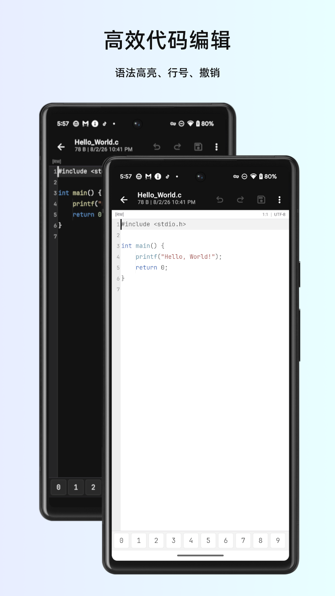
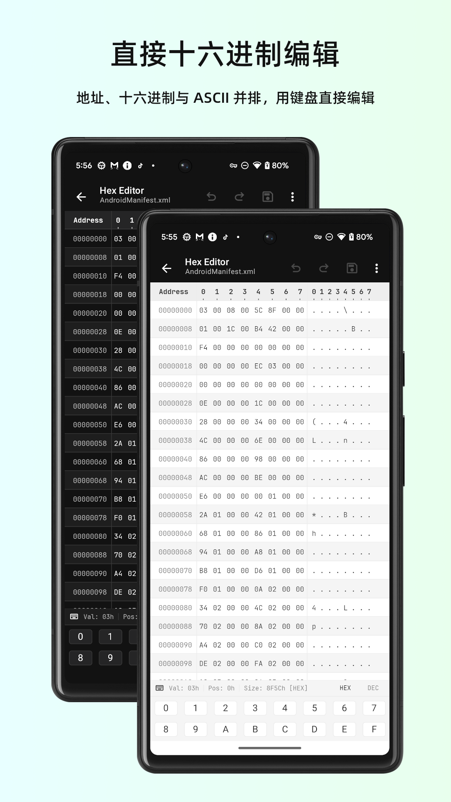
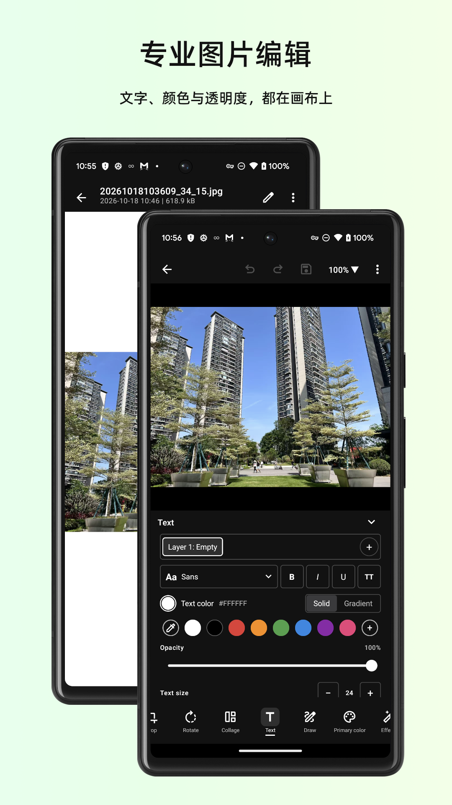
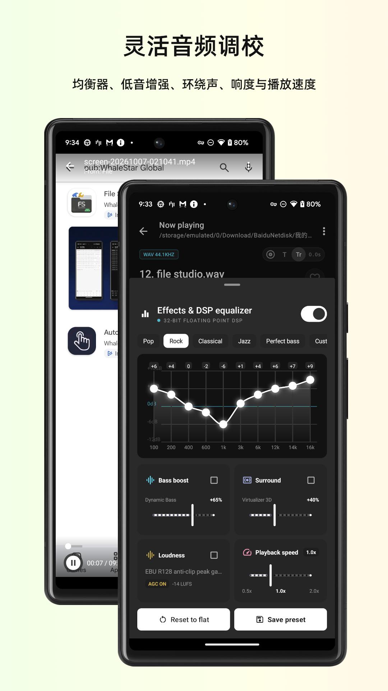
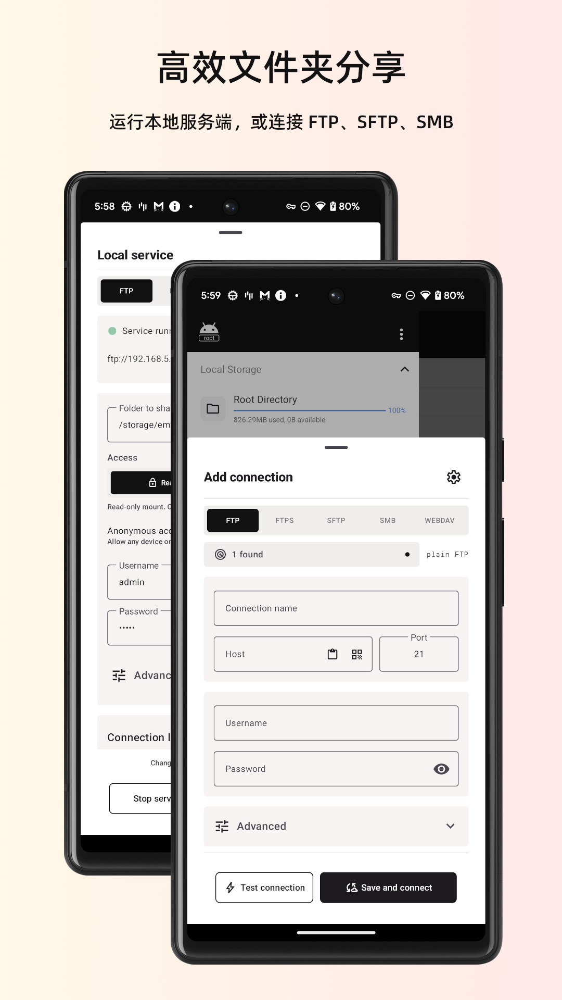
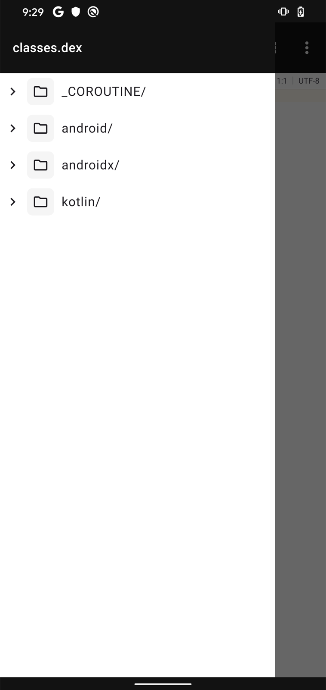

整套文件工作流，一个应用做完。
在 Android 上完成程序员平时要换好几款工具才能做的事：浏览工程目录、改源码、看二进制、拆开 APK 里的 DEX、开一个终端，再连回自己的电脑或服务器。

怎么用
一个应用，六种用法。
01
浏览
标签页、书签、批量操作
02
编辑
带语法高亮的文本与代码
03
查看
十六进制、APK 与 DEX
04
创作
图片编辑与音频 DSP
05
连接
FTP、SFTP、SMB、WebDAV
06
深入
Root、Shizuku、终端、SQLite






再往里看
同一个文件标签页里，还能打开通常要另装应用才有的工具。



另外还有
- 压缩包 — 把 ZIP、JAR、APK、XAPK 当目录浏览；解压、搜索、打开里面的文件
- 应用管理 — 已安装应用、权限、组件，以及导出 APK
- 附近传输 — 把文件发到同一 Wi-Fi 上的另一台 File Studio
- 回收站 — 恢复在应用内删除的项目
- SQLite — 查看数据库文件
- 文档与媒体 — 查看 PDF；图片、音频之外还有专业视频工具
也可以从本机分享文件夹：FTP、FTPS、SFTP（Android 8 及以上）或 WebDAV，并用二维码显示地址。反过来作为客户端，连接同一组协议。
适合谁
- 在手机上改脚本、看日志、核对配置的人
- 要在没有电脑时看 APK 结构、DEX 类树和 Smali 的 Android 开发者
- 需要 SFTP / SMB / WebDAV 连到自己的机器，或用 Shizuku 访问应用数据目录的人
订阅可解锁高级工具。Root、Shizuku 和附近传输无需订阅。